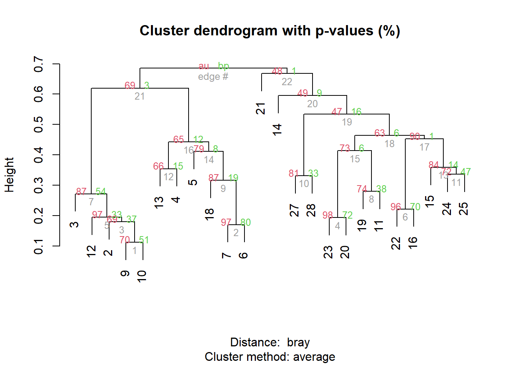
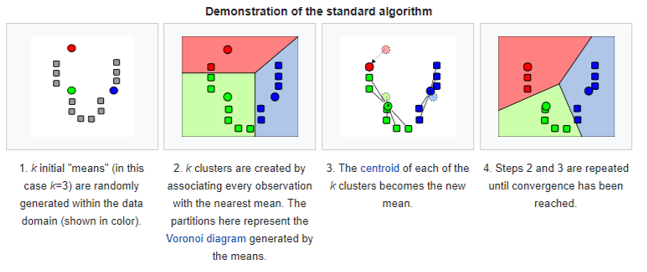
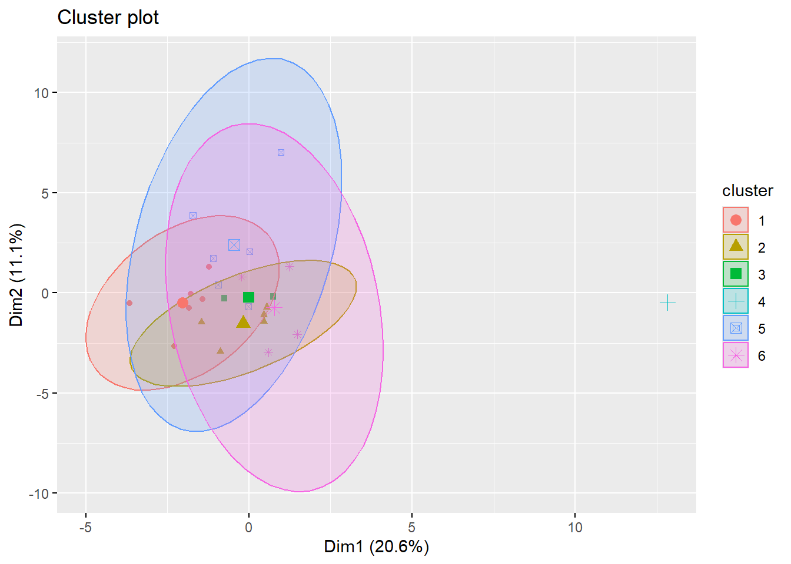
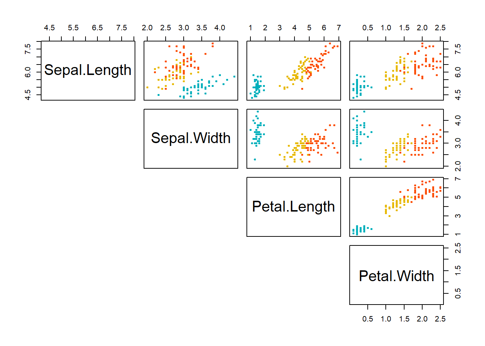

Multivariate analysis
library(vegan)
library(qgraph)
library(ade4)
library(mvabund)
library (pvclust)
library(factoextra)
library(ecodist)
library(tree)
library(rpart)
library(ggplot2)
library(randomForest)
library(caret)
library(rattle)
# to be careful
library(mvpart) # install_github("cran/mvpart", force = T) # after devtools
library(MVPARTwrap) # install_github("cran/MVPARTwrap", force = T) # after devtools
# functions from Borcard et al. 2011
source('https://www.dipintothereef.com/uploads/3/7/3/5/37359245/coldiss.r') Ecological phenomena are inherently complex, and it is rare that a single variable is sufficient to describe an ecological system, entity, or interaction. Rather, multiple response variables - such as the abundances of multiple species - are often measured to gain ecological insight. In addition, it is common to add multiple explanatory variables to an analysis in an attempt to explain the variation in the response data. Multivariate analyses contend with the complexity of simultaneously analysing multiple response variables. Generally, multivariate approaches are favoured to multiple executions of univariate methods as they save time and conserve statistical power which is quickly lost through multiple testing. In some cases, taking multiple variables into account simultaneously may reveal patterns that would not be detectable by univariate methods.
![Comparaison between univariate and multivariate analyses: Univariate data sets feature a single response variable (R1). This may be analysed against one or more explanatory variables (E1-E3). Multivariate data sets include multiple response variables (R1Rn). Multivariate analysis methods allow the evaluation of all response variables simultaneously, rather than requiring multiple executions of univariate methods. In the latter case, multiple testing occurs, which decreases the statistical power of the analysis.](illustrations/multi_intro.png)
Multivariate data are common in environmental sciences, occurring whe ever we measure several response variables from each replicate sample. Questions like how does the species composition of a community vary across sites, or how does the shape of trees (as measured by several morphological traits) vary with altitude are multivariate questions.
Johnson and Wichern (2002) suggest five types of scientific inquiry most suited to the application of multivariate methods.
Sorting and grouping: Many ecological questions are concerned with the similarity or dissimilarity of a collection of entities and their assignment to groups. Several multivariate methods, such as cluster analysis and non-metric dimensional scaling, allow detection of potential groups in the data. Active classification based on multivariate data may also be performed by methods such as linear discriminant analysis.
Data reduction or structural simplification: Several multivariate methods, such as principal components analysis, allow the summary of multiple variables through a comparatively smaller set of synthetic variables generated by the analyses themselves. Thus, high-dimensional patterns are presented in a lower-dimensional space, aiding interpretation.
Investigation of the dependence among variables: Dependence among response variables, among response and explanatory variables, or among explanatory variables is of key interest. Methods that detect dependence, such as redundancy analysis, are valuable in detecting influence or covariation.
Hypothesis testing: Exploratory techniques can reveal patterns in data from which hypotheses may be constructed (however, be careful of data dredging). Several methods, such as MANOVA, PERMANOVA, ANOSIM or the Mantel test, allow the testing of statistical hypotheses on multivariate data. Appropriately constructed assertions may thus be tested.
Prediction: Once the dependence among variables has been detected and characterised, multivariate models may be constructed to allow prediction.
Note that according to the field of research there is a trend to favor some tools more than others.
Data Structure
In ecology, thetypical dataset used in multivariate analyses will be represented by:
objects in row (e.g.samples can be sites, time periods, etc.)
measured variables for those objects in columns (e.g.species, environmental parameters, etc.)

Measured variables can be binary, quantitative, qualitative, rank-ordered, or even a mixture of them.
Transformations
If variables do not have uniform scale (e.g.environmental parameters measured in different units or scales), they usually have to be transformed (standardized).Occasionally, the variables in a raw data set have properties that violate an assumption of a statistical procedure (e.g.normally distributed values) or which cannot be compared to other variables due to differences in scale or variability. For example, principal components analysis (PCA) requires that variables be linearly related to one another and on roughly the same scale or will perform poorly. A transformation involves the application of a mathematical procedure to every value of a given variable or set of variables to create a new set of values. The new values of the transformed variables should still represent the data, but will be more amenable to analysis or comparison. A few basic but popular data transformation are described here. The main motivations for applying these transformations include placing variables on similar scales, simplifying calculations, meeting distributional assumptions (such as normality), and dealing with heteroscedasticity. Some transformations (see Ecologically motivated transformations) are motivated to improve effectiveness of many analysis in representing ecological relationships. Examples:
Hellinger Particularly suited to species abundance data, this transformation gives low weights to variables with low counts and many zeros. The transformation itself comprises dividing each value in a data matrix by its row sum, and taking the square root of the quotient.
Chord Like the Hellinger transformation, this transformation gives low weights to variables with low counts and many zeros. This transformation divides each value in a data matrix by the square root of its marginal sum of squares. It thereby sets the marginal (either row or column) sum of squares to one.
\(\chi^2\) distance This transformation is the product of the values transformed by the \(\chi^2\) metric and the square root of the sum of all counts in the data matrix. This is the distance used in correspondence analysis (CA) and canonical correspondence analysis (CCA) .
Before you begin transforming your data, ensure there is a defined and well-supported reason to do so. Common rationale includes linearising, normalising, or standardising data in order to respect a methods assumptions.
The function decostand() from the vegan
package offers an easy way to transform your data (see also
scale() from the base package and boxcox()
from the MASS package).
The varespec data frame has 24 rows and
44 columns. Columns are estimated cover values of
44 lichen species. The variable names are formed from
the scientific names, and are self explanatory for anybody familiar with
vegetation type / lichen species. The associate varechem
data frame has 24 row and 14 columns,
giving the soil characteristics of the very same sites as in the
varespec data frame.
## Callvulg Empenigr Rhodtome Vaccmyrt Vaccviti
## 18 0.55 11.13 0.00 0.00 17.80
## 15 0.67 0.17 0.00 0.35 12.13
## 24 0.10 1.55 0.00 0.00 13.47
## 27 0.00 15.13 2.42 5.92 15.97
## 23 0.00 12.68 0.00 0.00 23.73## N P K Ca Mg
## 18 19.8 42.1 139.9 519.4 90.0
## 15 13.4 39.1 167.3 356.7 70.7
## 24 20.2 67.7 207.1 973.3 209.1
## 27 20.6 60.8 233.7 834.0 127.2
## 23 23.8 54.5 180.6 777.0 125.8- Basic transformation
# Transforming positive data to a logarithmic
# scale reduces the range of the data set.
varespec.log<-decostand(varespec,'log')
varespec.log[1:5,1:5]## Callvulg Empenigr Rhodtome Vaccmyrt Vaccviti
## 18 5.781360 10.120238 0.000000 0.000000 10.79766
## 15 6.066089 4.087463 0.000000 5.129283 10.24436
## 24 3.321928 7.276124 0.000000 0.000000 10.39553
## 27 0.000000 10.563196 7.918863 9.209453 10.64115
## 23 0.000000 10.308339 0.000000 0.000000 11.21250- Transformations in aid of comparability
# Centring by translation, standardize.
# Obj is to remove differences in scale due
# due to diff magnitudes between variables
varechem.stand<-decostand(varechem,'stand')
varechem.stand[1:5,1:5]## N P K Ca Mg
## 18 -0.4673108 -0.1993234 -0.35515620 -0.2063474 0.06197472
## 15 -1.6250357 -0.4000407 0.06740707 -0.8742950 -0.40862677
## 24 -0.3949530 1.5134640 0.68120335 1.6570911 2.96604924
## 27 -0.3225952 1.0518143 1.09142901 1.0852097 0.96904082
## 23 0.2562672 0.6303080 0.27251990 0.8512022 0.93490392- Ecologically motivated transofrmations
# Low weights to variables with
# low counts and many zeros
varespec.hell<-decostand(varespec,'hellinger')
varespec.hell[1:5,1:5]## Callvulg Empenigr Rhodtome Vaccmyrt Vaccviti
## 18 0.07852337 0.35323616 0.000000 0.00000000 0.4467120
## 15 0.08636760 0.04350488 0.000000 0.06242341 0.3674886
## 24 0.03258003 0.12826771 0.000000 0.00000000 0.3781249
## 27 0.00000000 0.34706223 0.138802 0.21709446 0.3565663
## 23 0.00000000 0.37439612 0.000000 0.00000000 0.5121776(Dis)similarities
Most methods of multivariate analysis are explicitly or implicitly based on the comparison of all possible pairs of objects or descriptors.
Comparison takes the form of association measures which are assembled in a square and symmetrical association matrix of dimension \(n\) x \(n\) when objects are compared, or \(p\) x \(p\) when variables are compared.
When pairs of objects are compared, the analysis is said to be in Q mode.When pairs of descriptors are compared, the analysis is said to be in R mode.

In R mode correlation type coefficents are commonly used. In Q mode, the choice of a suitable association coefficient is crucial for further analysis. They are MANY of such coefficients with many variations. We can distinguished two classes of association measures based on how they deal with the double-zeros problem.
- The symmetrical coefficients will consider the information from the double-zero (also called negative matched).
The zero value has the same meaning as any other values (e.g.0mg/L of O2 in deep anoxic layer of a lake) during the comparison.
- The asymmetrical coefficients will ignore the information send from the double-zero
The zero value in matrix of species abundances (or presence-absence) can not always be counted as an indication of resemblance (presence has an ecological meaning, but no conclusions on the absence: e.g.is the absence of a given nationality in this class means that no students from this specific country are in NTU? And is it an element to evaluate the similarity with other university (high similarity because many nationalities probably absent? No, but at same sample size 1/0 may become informative)
When analyzing species data (or other data set with many 0), it is often recommended to use asymmetrical coefficients unless you have reason to consider each double absence in the matrix (e.g.controlled experiment with known community composition or ecologically homogeneous areas with disturbed zones)
You can download a spreadsheet here to check how a few
common metrics (Bray-Curtis, Canberra, Manhattan, Euclidean ) are
computed. Many of the common dissimilarity indices can be computed using
the function vegdist() of the vegan
package.
Symmetrical coefficients
Euclidean distance is the most commonly-used of our distance measures. For this reason, Euclidean distance is often just to referred to as distance. When data is dense or continuous, this is the best proximity measure. The Euclidean distance between two points is the length of the path connecting them.This distance between two points is given by the Pythagorean theorem.
\(E_d=\sqrt{\sum (x_i-y_j)^2}\)
Here the abundance of a species from one sample is subtracted from its counterpart in the other sample. Instead of ignoring the sign, the result is squared (which gives a positive value.
## 18 15 24 27 23 19 22 16
## 15 2.076795
## 24 6.881455 6.902911
## 27 4.472930 4.640031 5.480141
## 23 2.508157 3.725441 5.714228 3.485496
## 19 3.580362 4.230579 5.444585 3.963974 2.090646
## 22 2.659129 3.322366 6.211287 3.144598 2.350078 2.915506
## 16 2.295538 2.523272 7.578978 5.597915 3.844376 4.536930 3.035372
## 28 4.711717 5.135626 5.727870 2.251989 3.379820 4.167968 3.197171 5.425819
## 13 5.163051 5.143758 5.503478 5.183118 4.829489 4.703184 4.780313 5.538243
## 14 2.214261 2.508627 6.052150 4.547412 2.613444 2.795418 2.417533 2.216285
## 20 3.929612 4.722576 5.137563 3.710586 3.082121 3.794574 3.596080 4.915697
## 25 3.133990 3.438813 6.817505 2.697976 3.398260 4.233353 2.128549 3.768984
## 7 4.902707 4.851508 8.765682 7.825045 6.340833 6.525625 5.467040 3.669583
## 5 5.494762 5.503429 9.044446 7.614066 6.780440 7.282166 5.337012 3.759681
## 6 4.240836 3.522221 8.339925 7.133815 5.988268 6.159191 4.960431 3.090877
## 3 6.114415 5.874919 9.114128 8.443844 7.368183 7.483323 6.448263 5.164238
## 4 6.056153 5.490663 5.675037 6.710881 6.292292 6.296010 6.363818 6.193482
## 2 4.952230 4.272081 6.946933 6.359101 5.933650 6.135478 5.330507 4.670076
## 9 4.210905 3.152702 5.301315 5.180014 4.740011 4.679232 4.286254 4.112046
## 12 2.859399 1.748190 6.857408 5.238196 4.168750 4.453430 3.303346 2.129211
## 10 4.971930 4.123743 5.532590 4.709422 5.191931 5.908087 4.946672 5.207166
## 11 6.555175 6.159317 6.307815 6.463291 6.605497 7.125631 6.312777 6.647700
## 21 2.541018 3.350502 7.842843 5.887089 3.751708 4.297416 3.586107 2.404075
## 28 13 14 20 25 7 5 6
## 15
## 24
## 27
## 23
## 19
## 22
## 16
## 28
## 13 4.787319
## 14 4.504796 4.677466
## 20 3.386708 4.080519 3.675366
## 25 3.206937 5.633416 3.508540 3.675065
## 7 7.426831 6.139937 4.890801 6.731633 6.073600
## 5 7.345700 7.712800 5.299028 7.185358 5.552826 3.955814
## 6 7.170158 6.720173 4.055417 6.600159 5.287531 2.890701 4.044360
## 3 7.980027 6.714928 6.114734 7.505396 6.864594 2.005845 5.012284 3.642568
## 4 6.415616 4.331136 5.234877 4.983238 6.608737 6.416942 8.119472 6.018705
## 2 6.212418 4.446846 4.870891 5.960714 5.631457 3.980541 5.862950 4.262119
## 9 5.396570 4.824086 3.218064 4.633718 4.562550 5.121769 5.991261 3.826538
## 12 5.541108 5.617684 2.374512 5.210211 3.808624 4.254957 4.589606 2.563051
## 10 5.157768 5.262302 5.090947 5.335147 4.742350 6.426056 6.611317 5.894445
## 11 6.851687 6.549927 6.739702 6.703751 6.393673 6.843533 7.403817 6.822555
## 21 6.105741 6.428456 3.034526 5.028912 4.141141 4.644876 4.840212 4.233115
## 3 4 2 9 12 10 11
## 15
## 24
## 27
## 23
## 19
## 22
## 16
## 28
## 13
## 14
## 20
## 25
## 7
## 5
## 6
## 3
## 4 6.605012
## 2 3.940559 4.585946
## 9 5.632169 3.553283 3.905153
## 12 5.301066 5.545040 4.280278 2.657423
## 10 6.831129 5.614997 4.386353 3.851042 4.281034
## 11 6.803213 6.828622 5.390366 5.573175 5.866142 3.337215
## 21 6.053964 7.243058 6.018877 5.083938 3.278880 5.886786 6.743400Hellinger transformation (and Chord transformation) addresses the double-zeros problem, so that Euclidean distance can be computed on species data set:
## 18 15 24 27 23 19 22
## 15 0.6885085
## 24 0.8832262 0.6510691
## 27 0.7910534 0.6375933 0.7940364
## 23 0.5081880 0.5086377 0.7408735 0.6271162
## 19 0.6243167 0.6933916 0.8323611 0.6007214 0.6098096
## 22 0.7884443 0.5023435 0.8842105 0.6161528 0.6837140 0.8000232
## 16 0.6891088 0.4711067 0.8179679 0.6893387 0.6194974 0.7885046 0.3705829
## 28 1.0695865 0.7418770 0.8263419 0.4560429 0.8694615 0.8258045 0.7873319
## 13 0.5778679 0.7456913 0.9664977 0.9388940 0.8094553 0.7353812 0.8109562
## 14 0.7629536 0.6167549 0.8470347 0.9156971 0.7033679 0.8705452 0.6380148
## 20 0.5015733 0.4883031 0.5844143 0.5902462 0.4137370 0.6718956 0.6631752
## 25 0.8205461 0.5929722 0.5952999 0.7237625 0.6146184 0.7903998 0.6863306
## 7 0.4300117 0.8908551 1.0387277 1.0219158 0.7803477 0.9133439 0.9886714
## 5 0.6685566 0.9351727 1.0927175 1.1318043 0.8941397 0.9866085 1.1184278
## 6 0.4229041 0.8550120 1.0019788 1.0154041 0.7692241 0.7496268 0.9759759
## 3 0.6862552 1.0506689 1.1446854 1.0511938 0.9908644 0.6935852 1.1008011
## 4 0.6904660 0.9400679 1.0764631 1.0510837 0.9564543 0.7252940 1.0477732
## 2 0.8254764 1.1144072 1.1432947 1.0149059 1.0174019 0.6575977 1.1434747
## 9 0.8853145 1.0518246 1.0894975 0.9718277 0.9874184 0.5826872 1.0827697
## 12 0.6986821 0.9424660 0.9771750 0.8755972 0.8538765 0.4746625 0.9984029
## 10 0.8453086 1.1073720 1.1401871 1.0233948 1.0035372 0.6206193 1.1211180
## 11 0.5929664 0.7000506 0.8416860 0.8104208 0.7311443 0.4897586 0.8911256
## 21 0.8348124 1.0084494 1.0041300 0.7974464 0.8002867 0.6931377 0.9195848
## 16 28 13 14 20 25 7
## 15
## 24
## 27
## 23
## 19
## 22
## 16
## 28 0.8651196
## 13 0.6868519 1.1276956
## 14 0.6355864 1.0632806 0.7621527
## 20 0.5800131 0.8261883 0.7598172 0.6239459
## 25 0.6418272 0.8386606 0.9749686 0.8008885 0.6257771
## 7 0.8709735 1.2401937 0.7234806 0.9181760 0.7123701 1.0075616
## 5 0.9433809 1.2907516 0.7643290 1.0330193 0.8683251 1.1151073 0.4875320
## 6 0.8448554 1.2529995 0.5412746 0.8066733 0.6965889 1.0154715 0.4341785
## 3 1.0289198 1.2910911 0.7030126 1.0834102 0.9495672 1.1496109 0.7667576
## 4 0.9552775 1.2394221 0.5553063 0.9692510 0.9189013 1.1101797 0.7596461
## 2 1.0868402 1.2550752 0.8247355 1.1625459 0.9961091 1.1714913 0.9818356
## 9 1.1031053 1.1637131 0.8972488 1.1250918 1.0049397 1.1137489 1.1117257
## 12 0.9589885 1.1293982 0.7308159 0.9969037 0.8276797 1.0178014 0.9370430
## 10 1.0973935 1.2513249 0.8461219 1.1141905 1.0135505 1.1498831 1.0408385
## 11 0.8133014 1.0137148 0.5284663 0.8867857 0.6932719 0.9295287 0.7947845
## 21 0.9534487 0.9838784 0.9620969 1.0548296 0.8789273 1.0033420 1.0322018
## 5 6 3 4 2 9 12
## 15
## 24
## 27
## 23
## 19
## 22
## 16
## 28
## 13
## 14
## 20
## 25
## 7
## 5
## 6 0.5422481
## 3 0.7834206 0.5632560
## 4 0.7209618 0.5498198 0.4745660
## 2 0.9676165 0.7519117 0.3327985 0.6421022
## 9 1.1303276 0.8842728 0.5387671 0.7147272 0.3903159
## 12 0.9772972 0.6880630 0.4171877 0.6166016 0.2871988 0.3345441
## 10 1.0539527 0.8009789 0.4240141 0.6520573 0.2542151 0.2506173 0.2730400
## 11 0.7575263 0.5893188 0.5358943 0.5263155 0.5804940 0.6162229 0.4585293
## 21 1.1237297 0.9296524 0.9171831 1.0127395 0.8497142 0.7919298 0.7722441
## 10 11
## 15
## 24
## 27
## 23
## 19
## 22
## 16
## 28
## 13
## 14
## 20
## 25
## 7
## 5
## 6
## 3
## 4
## 2
## 9
## 12
## 10
## 11 0.6228418
## 21 0.8209725 0.8595703Check you have a triangular matrix.
Asymmetrical coefficient
Bray-Curtis dissimilarity is the golden ditance metric in ecology. At first, you subtract the abundance of one species in a sample from its counterpart in the other sample but ignore the sign. The second component is the abundance of a species in one sample added to the abundance of its counterpart in the second sample. If a species is absent, then its abundance should be recorded as 0 (zero).
\(BC_d = \frac {\sum |x_i-x_j|}{\sum(x_i+x_j)}\)
## 18 15 24 27 23 19 22
## 15 0.5319661
## 24 0.6734223 0.3663630
## 27 0.5724901 0.3370702 0.4299930
## 23 0.3732068 0.3655490 0.5029341 0.4270900
## 19 0.4953762 0.4290101 0.4828032 0.3690329 0.3491125
## 22 0.6402091 0.3885902 0.5282766 0.4415089 0.4804766 0.4621729
## 16 0.5326273 0.3966699 0.5852581 0.5225031 0.4062716 0.4656792 0.2218188
## 28 0.8470134 0.4870578 0.5526456 0.3317757 0.6862121 0.6127170 0.5977598
## 13 0.3355118 0.6013429 0.7577905 0.7486106 0.6193583 0.5830224 0.6940324
## 14 0.5325101 0.4858051 0.6513873 0.7043458 0.5572642 0.6335312 0.5045794
## 20 0.3207002 0.3646462 0.4243156 0.4212449 0.1935377 0.3861712 0.4685331
## 25 0.6372691 0.3520742 0.3364774 0.4326993 0.4259456 0.4268344 0.3874100
## 7 0.3334867 0.6619036 0.7919020 0.7736910 0.6360640 0.6929678 0.7479339
## 5 0.4955288 0.7124711 0.8559962 0.8774613 0.7255857 0.7820381 0.8654101
## 6 0.2993194 0.6200608 0.7459463 0.7460287 0.6202565 0.5803845 0.7245927
## 3 0.5196235 0.7615230 0.8339976 0.8106431 0.7190895 0.4904688 0.8024773
## 4 0.4586977 0.6896931 0.8326408 0.8493322 0.7163218 0.5098318 0.7994110
## 2 0.5908303 0.8194098 0.8384232 0.7561022 0.7334173 0.5032985 0.8323197
## 9 0.6694425 0.7665353 0.7485010 0.7421684 0.7110145 0.4791854 0.7678474
## 12 0.5106661 0.6641018 0.6851745 0.6257228 0.5669163 0.3483178 0.7003953
## 10 0.6627995 0.7879708 0.7900651 0.7080509 0.7048449 0.4445282 0.7890540
## 11 0.4289045 0.4956042 0.5857713 0.6223598 0.4956293 0.2803481 0.5805660
## 21 0.5408593 0.7579060 0.7247121 0.5760192 0.4898847 0.5229447 0.6890447
## 16 28 13 14 20 25 7
## 15
## 24
## 27
## 23
## 19
## 22
## 16
## 28 0.6737634
## 13 0.5343909 0.8568502
## 14 0.4740722 0.8053676 0.5431428
## 20 0.3436226 0.6604601 0.5442714 0.5125245
## 25 0.4310525 0.5916702 0.7431139 0.5497397 0.4512263
## 7 0.6422017 0.8990358 0.4495556 0.6277723 0.5608034 0.7581174
## 5 0.7116385 0.9523825 0.5146308 0.7297675 0.6684507 0.8599138 0.3322992
## 6 0.6243634 0.9013571 0.3335109 0.5927910 0.5171754 0.7389265 0.1705519
## 3 0.6686124 0.9233027 0.4911727 0.8044696 0.6415434 0.8166456 0.5225602
## 4 0.6491265 0.9330336 0.3546025 0.6787727 0.6461156 0.8413350 0.5168000
## 2 0.6994655 0.9023620 0.5918868 0.8336489 0.6602936 0.8164407 0.6601582
## 9 0.8263480 0.8657290 0.7185052 0.8270307 0.7121001 0.7792214 0.8303301
## 12 0.6382774 0.8527890 0.5866597 0.7405848 0.5418122 0.6897064 0.7000682
## 10 0.7583198 0.8972695 0.7070855 0.8067438 0.7059382 0.7749324 0.7652915
## 11 0.5027300 0.7552225 0.4091291 0.6675810 0.4247147 0.6132484 0.5384601
## 21 0.7426973 0.7208253 0.7197618 0.7984976 0.5800524 0.7417949 0.7950997
## 5 6 3 4 2 9 12
## 15
## 24
## 27
## 23
## 19
## 22
## 16
## 28
## 13
## 14
## 20
## 25
## 7
## 5
## 6 0.4060208
## 3 0.5823691 0.4451619
## 4 0.5132154 0.4175720 0.3006833
## 2 0.7454050 0.5599848 0.1887205 0.4162876
## 9 0.9006322 0.7159260 0.3542673 0.5585814 0.2237425
## 12 0.7938323 0.5731427 0.2383698 0.4451089 0.1859789 0.2214144
## 10 0.8567748 0.6487949 0.3060963 0.5275663 0.1361378 0.1123608 0.1768576
## 11 0.5838320 0.4093075 0.3095142 0.2997939 0.4210529 0.5016651 0.3633741
## 21 0.8891536 0.6794069 0.7477696 0.7724904 0.6785879 0.6084939 0.5653481
## 10 11
## 15
## 24
## 27
## 23
## 19
## 22
## 16
## 28
## 13
## 14
## 20
## 25
## 7
## 5
## 6
## 3
## 4
## 2
## 9
## 12
## 10
## 11 0.5012480
## 21 0.6200462 0.6682173Jaccard Similarity is used to find similarities between sets on the only base of presence and absence. The Jaccard similarity between two sets \(A\) and \(B\) is defined as:
\[ J(A, B) = \frac{|A \cap B|}{|A \cup B|} \]
# Jaccard dissimilarity matrix using vegdist()
spe.jd <- vegdist(varespec,'jac',binary=T) # binary p/a This measure is important when comparing \(\beta\)-diversity among sites for example. Other distances applying to presence-Absence data: Srensen, Ochiai, etc.
Note: For mixed types variables, including
categorical or qualitative multiclass variables use Gowers
similarity. It is easily computed in R using daisy
function built in the cluster package. Avoid
vegdist with method='gower', which is
appropriate for quantitative and presence-absence, but not for
multiclass variables. Overall, gowdis from the package
FD is the most complete function to compute Gowers
coefficient in R, and commonly used in trait-based
approach analyses.
Visualization
Among the many ways to visualize similarity matrix: the function
coldiss (Borcard et al.2011) and the package
qgraph offer nice options:
- Heat map
## Loading required package: gclus## Warning: package 'gclus' was built under R version 4.2.3## Loading required package: cluster## Registered S3 method overwritten by 'gclus':
## method from
## reorder.hclust vegan- Network
Practice 7.5 Using the tikus data set from
the package mvabund - check ?tikus. Select
observation for the year 1981, 1983, and 1985 only (noted
81, 83 and 85). Build a
Bray-Curtis dissimilarity matrix among selected observations. Plot heat
map of this matrix. Build a network of SPECIES
co-occurrence (presence/absence) based on your selection of years.
Clustering
We often aim to recognize discontinuous subsets in an environment which is represented by discrete (e.g.taxonomic) changes but perceived as continuous changes in ecology.
Clustering consists in partitioning the collection of objects (or descriptors in R-mode). Clustering does not test any hypothesis.
Clustering is an explanatory procedure which helps to understand data with complex structure and multivariate relationships, and is a very useful method to extract knowledge and information especially from large datasets.
Many clustering approaches rely on association matrix, which stresses on the importance of the right choice of an appropriate association coefficient.
The definition of a cluster varies, and different cluster analysis techniques may approach the problem very differently. We recognize different families of clusering:
Sequential or Simultaneous algorithms (most of the clustering algorithm)
Agglomerative or Divisive
Monothetic (cluster members with common prop.) versus Polythetic (distance between elements defines membership)
Hierarchical versus Non-hierarchical (flat)
Probabilistic (decision tree) versus non-probabilistic methods
Hard and Soft (may overlap)
Numerical classification often requires two arguments: the matrix of distances among samples (ecological resemblance) and the method to us e.g.: name of the clustering algorithm. Clustering produces tree-like structure. Again be careful of data dredging. You dont choose clustering method according to how your tree looks like.The suitable method is usually carefully selected and/or evaluated according to the data set you are dealing with and your initial hypotheses (some may not make sense). Below we will describe two widely-used approaches of clustering. We will aslo plant some seeds
Hierarchical Clustering
Hierarchical cluster analysis may be performed using an object x object matrix of (dis)similarities or distances. It attempts to find a good, although perhaps not the best, grouping of objects based on the distances supplied in a hierarchical manner, first grouping objects with the lowest dissimilarities before proceeding. Therefore grouping may be presented as a dendrogram. Many of these algorithms are greedy (i.e.the optimal local solution is always taken in the hope of finding an optimal global solution) and heuristic, requiring the results of cluster analysis to be evaluated for stability by, for example, bootstrapping procedures.
Agglomerative clustering is a widespread approach in hierarchical cluster analysis. Agglomerative algorithms successively merge individual entities and clusters that have the highest similarity values. These typically use a linkage criterion to determine the (dis)similarity values for clusters formed during the algorithms execution. These are valid both for the clustering of objects and of variables provided some measure of (dis)similarity; however, note other clustering techniques may not share this flexibility. Agglomerative algorithms end when all the individual entities and clusters have been merged into a single cluster. Below some common linkage criteria are summarised.
In R, the function hclust() allows to implement some of
the common hierarchical clustering algorithms. pvclust()
from the pvclust allows bootstrapping and indication of
highly supported clusters with pvrect().
Common algorithms
SINGLE LINKAGE AGGLOMERATIVE CLUSTERING (neighbor sorting)
Single linkage allows object to agglomerate easily to a group since a link to a single object of the group suffices to induce fusion. This is the closest friend procedure.
commonly produced chain dendrograms: a pair is linked to a third object
agglomerates objects on the basis of their shortest pairwise distance
partitions difficult to interpret, but gradients quite clear
The doubs dataset (ade4 package) gives
environmental variables, fish species and spatial coordinates for 30
sites along a river.
# Step 1: dataset
# ?doubs
data(doubs)
spe.db<-doubs$fish
spa.db<-doubs$xy
# remove empty sample 8 from both datasets
spe.db <-spe.db[-8,]
spa.db<- spa.db[-8,]
# Step 2: chord distance = normalization + euclidean
spe.db.norm<-decostand(spe.db,'normalize')
spe.db.ch<-vegdist(spe.db.norm,'euc')
# Step 3: single linkage agglomerative clustering
spe.db.ch.single <-hclust(spe.db.ch,method='single')
# Step 4: plot dendrogramApply well for examining change in species composition along environmental gradients.
COMPLETE LINKAGE AGGLOMERATIVE CLUSTERING (furthest neighbor sorting)
A group admits a new member only at the distance corresponding to the furthest object of the group: one could say that the admission requires unanimity of the group.
dendrograms look a bit like rakes some cluster merge together at the highest dissimilarity
allow an object (or a group) to agglomerate with another group only at the distance corresponding to that of the most distant pair of objects
AVERAGE AGGLOMERATIVE CLUSTERING (e.g.UPGMA)
The most common method in ecology (species data). It comprises four sub-methods that are based on average or median dissimilarities among objects, centroids of cluster, or McQuittys method.

WARDS MINIMUM VARIANCE CLUSTERING
Ward method is also a favorite clustering method. Unlike the others, instead of measuring the distance directly, it analyzes the variance of clusters. Wards is said to be the most suitable method for quantitative variables. It is based on linear model criterion of least square: the within-group sum of square is minimized.
Note: Ward method is based on Euclidean model. It should not be combined with distance measures, which are not strictly metric such as the popular Bray-Curtis distance.
par(mfrow = c(2, 2))
plot(spe.db.ch.single, main='Single linkage agglomerative clustering' )
plot(spe.db.ch.complete, main='Complete linkage agglomerative clustering')
plot(spe.db.ch.UPGMA, main='Average (UPGMA) agglomerative clustering')
plot(spe.db.ch.ward, main='Ward clustering')
Clustering quality
There are many ways to evaluate the overall quality of the chose clustering algorithms and therefore of their representations.
- the cophenetic correlation related distances
extracted from the dendrogram (function
copheneticon ahclustobject) with ditances in our original distance matrices. A higher correlation means a better representation of the initial matrix.
# Single linkage clustering
spe.db.ch.single.coph <- cophenetic (spe.db.ch.single)
cor(spe.db.ch,spe.db.ch.single.coph)## [1] 0.599193# complete linkage clustering
spe.db.ch.complete.coph <- cophenetic (spe.db.ch.complete)
cor(spe.db.ch,spe.db.ch.complete.coph)## [1] 0.7655628# Average clustering
spe.db.ch.UPGMA.coph <- cophenetic (spe.db.ch.UPGMA)
cor(spe.db.ch,spe.db.ch.UPGMA.coph)## [1] 0.8608326# Ward clustering
spe.db.ch.ward.coph <- cophenetic (spe.db.ch.ward)
cor(spe.db.ch,spe.db.ch.ward.coph)## [1] 0.7593934UPGMA performs better at retaining information of our initial chord distance matrix.
- the shepard-like diagram is a plot that represents orginal distances against the cophentic distances. Can be combined with cophonetic correlation seen above.
par(mfrow=c(2,2))
plot(spe.db.ch,spe.db.ch.single.coph,xlab='Chord distance',ylab='Chophenetic distance',asp=1, main=c('Single linkage',paste('Cophenetic correlation',round(cor(spe.db.ch,spe.db.ch.single.coph),3))))
abline (0,1)
lines(lowess(spe.db.ch,spe.db.ch.single.coph),col='red')
plot(spe.db.ch,spe.db.ch.complete.coph,xlab='Chord distance',ylab='Chophenetic distance',asp=1, main=c('Complete linkage',paste('Cophenetic correlation',round(cor(spe.db.ch, spe.db.ch.complete.coph),3))))
abline (0,1)
lines(lowess(spe.db.ch, spe.db.ch.complete.coph),col='red')
plot(spe.db.ch,spe.db.ch.UPGMA.coph,xlab='Chord distance',ylab='Chophenetic distance',asp=1, main=c('UPGMA',paste('Cophenetic correlation',round(cor(spe.db.ch,spe.db.ch.UPGMA.coph),3))))
abline (0,1)
lines(lowess(spe.db.ch,spe.db.ch.UPGMA.coph),col='red')
plot(spe.db.ch,spe.db.ch.ward.coph,xlab='Chord distance',ylab='Chophenetic distance',asp=1, main=c('Ward clustering',paste('Cophenetic correlation',round(cor(spe.db.ch,spe.db.ch.ward.coph),3))))
abline (0,1)
lines(lowess(spe.db.ch,spe.db.ch.ward.coph),col='red')
Cluster groups
By simply watching a dendrogram, the number of groups or partition to
interpret is highly subjective. Lets repeat the step above for the
varespec data set. The UPGM tree also came out at the
dendrogamm retaining the best information from our bray-curtis
dissimilarity matrix.
spe.bc.UPGMA<-hclust(spe.bc,method='average')
plot(spe.bc.UPGMA, main='Average (UPGMA) agglomerative clustering')
rect.hclust(spe.bc.UPGMA, k=3, border="red")
rect.hclust(spe.bc.UPGMA, k=6, border="blue")
rect.hclust(spe.bc.UPGMA, k=8, border="green")
Solution at 3, 5, 8? They are methods that can guide you at selecting a relevant number of groups - again danger of data dredging!
- Fusion Level values
The plot of the Fusion Level Values is further used a diagnostic of interpretable cluster groups. It examines values where a fusion between two branches of a dendrogram occurs.
plot(spe.bc.UPGMA$height, nrow(varespec):2,
type='S',main='Fusion levels - bray-curtis - UPGMA',
ylab='k (number of clusters)', xlab='h (node height)', col='grey')
text (spe.bc.UPGMA$height,nrow(varespec):2, nrow(varespec):2, col='red', cex=0.8)The graph of fusion level values shows clear jump of fusion values between 3-4 and 6-7 partitions.
- The Silhouette widths indicator (also apply for non-hierarchical clustering)
The silhouette width is a measure of the degree of membership of an object to its cluster based on the average distance between this object and all objects of the cluster to which is belongs, compared to the same measure for the next closest cluster. Silhouette widths range from -1 to 1 and can be averaged over all objects of a partition. The greater the value is, the better the object is clustered. Negative values mean that the corresponding objects have probably placed in the wrong cluster (intra group variation higher than inter group variation).
# step 1: cut your tree
cutg1<-cutree(spe.bc.UPGMA, k=6)
# step 2: calculate silhouette for the different partitions
sil1<-silhouette (cutg1,spe.bc)
# step 3: plot silhouette
plot(sil1)
Repeat by changing k, the number of partitions
- the Elbow method
This method looks at the percentage of variance explained (SS) as a function of the number of cluster. One should choose a number of clusters so that adding another cluster doesnt give much better explanation. At some point the marginal gain will drop, giving an angle in the graph. The number of clusters is chosen at this point, hence the elbow criterion (wss). This is very common method to select an appropriate number of cluster to interpret.

- The Mantel test
Compares the original distance matrix to (binary) matrices computed from dendrogram cut at various level and choose the level where matrix correlation is the highest. The Mantel correlation is in its simplest sense, i.e.the equivalent of a Pearson r correlation but between distance matrices.
Comparison between the distance matrix and binary matrices representing partitions
## Mantel test
# Optimal number of clusters
# according to mantel statistic
# Function to compute a binary distance matrix from groups
grpdist<-function(x){
require (cluster)
gr<-as.data.frame(as.factor(x))
distgr<-daisy(gr,'gower')
distgr
}
# run based on the UPGMA clustering
kt<-data.frame(k=1:nrow(varespec),r=0)
for (i in 2:(nrow(varespec)-1)){
gr<-cutree(spe.bc.UPGMA,i)
distgr<-grpdist(gr)
mt<-cor(spe.bc,distgr, method='pearson')
kt[i,2] <- mt
}
k.best <- which.max (kt$r)
plot(kt$k,kt$r,
type='h', main='Mantel-optimal number of clusters - UPGMA',
xlab='k (number of groups)',ylab="Pearson's correlation")
axis(1,k.best,
paste('optimum', k.best, sep='\n'), col='red',font=2, col.axis='red')
points(k.best,max(kt$r),pch=16,col='red',cex=1.5)NbClustfor many others
The function NbClust()provides 30 indices for
determining the number of clusters and proposes to user the best
clustering scheme from the different results obtained by varying all
combinations of number of clusters, distance measures, and clustering
methods (Charrad et al.2014).
Bootstrapping trees
A litte handmade add-on to us use pvclust() from the
package pvclust with Bray-Curtis dissimilarity (note that
data set need to be transposed for using this function).
pv.results<-pvclust(t(varespec), # to cluster rows - omit t() to cluster columns,
method.hclust = "average",
method.dist = function(x) vegan::vegdist(t(x), "bray"),
n = 1000) # and other arguments you need## Bootstrap (r = 0.5)... Done.
## Bootstrap (r = 0.59)... Done.
## Bootstrap (r = 0.68)... Done.
## Bootstrap (r = 0.8)... Done.
## Bootstrap (r = 0.89)... Done.
## Bootstrap (r = 1.0)... Done.
## Bootstrap (r = 1.09)... Done.
## Bootstrap (r = 1.18)... Done.
## Bootstrap (r = 1.3)... Done.
## Bootstrap (r = 1.39)... Done.
boston.pv <- pvclust(varesspec, method.dist=correlation, nboot=100, parallel=FALSE)
Lets apply this on the doubs data set:
# Calculates hierarchical cluster analysis of species data
spe.db.ch.UPGMA<-hclust(spe.db.ch,method='average')
fviz_nbclust(spe.db, hcut, diss=dist(spe.db.norm, method='euclidean'),method = "wss",hc_method = "single")
# Dendrogram with the observed groups
par(mfrow=c(1,2))
plot (spe.db.ch.UPGMA)
rect.hclust (spe.db.ch.UPGMA, k = 6, border = 1:6)
# Spatial distribution of samples with projection of hierarchical classification
UPGMA.cluster <- cutree (spe.db.ch.UPGMA, k = 6)
plot (y ~ x, data = spa.db, pch = UPGMA.cluster, col = UPGMA.cluster, type = 'b', main = 'Chord distance - UPGMA method')
## null device
## 1Lets combine heatmap and cluster
- Heat map & clustering visualization (example)
We must reorder objects (function reorder.hclust) so
that their order in the dissimilarity matrix is respected . This does
not affect the topology of the dendrogram.
spe.chwo<-reorder.hclust(spe.db.ch.UPGMA,spe.db.ch)
dend<-as.dendrogram(spe.chwo)
heatmap(as.matrix(spe.db.ch),Rowv=dend,symm=TRUE, margin=c(3,3))
Practice 7.6 Using tikus data set and
subset on years 1981, 1983 and 1985: compute the three common clustering
methods (single, complete, average) on a Bray-Curtis dissimilarities
matrix. Compare resulting dendrograms using cophenetic correlation and
Shepard-like diagram. Choose method with the one with the highest
cophenetic correlation and produce a heat map of the reordered distance
matrix together with a visualization of the related dendrogram.
Non-Hierarchical Clustering
Non-hierarchical clustering creates partitions but without hierarchy (think of categorizing fruits: apples, oranges, bananas). It determine a partition of the objects into k groups, or clusters, such as the objects within each cluster are more similar to one other than to objects in the other clusters.
It usually requires an initial configuration (user usually determine the number of groups, k), which will be optimized in a recursive process (often random). If random, the initial configuration is run a large number of times with different initial configurations in order to find the best solution.
The most known and commonly used non-hierarchical partitioning algorithms is k-means clustering (MacQueen, 1967), in which, each cluster is represented by the center or means of the data points belonging to the cluster.

Three crital steps:
Initialization: k observations from the dataset are used as the initial means. The random partition method first randomly assigns a cluster to each observation and then proceeds to the update step, thus computing the initial mean to be the centroid of the clusters randomly assigned points.
Assignment step Assign each observation to the cluster with the nearest mean: that with the least squared Euclidean distance (Mathematically, this means partitioning the observations according to the Voronoi diagram generated by the means)
Update step Recalculate means (centroids) for observations assigned to each cluster.
The algorithm has converged when the assignments no longer change. The algorithm is not always guaranteed to find the optimum.

The aims is to identify high-density regions in the data. To do so, the method iteratively minimizes an objective function the total error sum of squares (TESS or SSE), which is the sum of the within groups sums-of squares. It is basically the sum, over the k groups, of the sums of squared distance among the objects in the group, each divided by the number of objects in the group. The algorithm is often presented as assigning objects to the nearest cluster by distance. Using a different distance function other than (squared) Euclidean distance may prevent the algorithm from converging. Various modifications of k-means such as k-medoids [PAM (Partitioning Around Medoids, Kaufman & Rousseeuw, 1990] have been proposed to allow using other distance measures. In this case, cluster is represented by one of the objects in the cluster.
Data must be standardized prior to partitioning. With a
pre-determined number of groups, recommended function is:
kmeans() from the stats package. The argument
nstart will repeat the analysis a large number of time
using different initial configuration until finding the best
solution.
Note: do not forget to normalized your data
# k-means partitioning of the pre-transformed species data
spe.kmeans <- kmeans(spe.bc, centers=6, nstart=100)
# k-means group number of each observation spe.kmeans$cluster
spe.kmeans$cluster## 18 15 24 27 23 19 22 16 28 13 14 20 25 7 5 6 3 4 2 9 12 10 11 21
## 1 5 6 6 5 3 5 5 6 1 5 5 6 1 1 1 2 1 2 2 2 2 3 4# Comparison with the 5-group classification derived from UPGMA clustering
comparison<-table(spe.kmeans$cluster,cutg1)
comparison## cutg1
## 1 2 3 4 5 6
## 1 6 0 0 0 0 0
## 2 0 0 0 0 5 0
## 3 0 2 0 0 0 0
## 4 0 0 0 0 0 1
## 5 0 5 0 1 0 0
## 6 0 2 2 0 0 0# Visualize k-means clusters
fviz_cluster(spe.kmeans, data = varespec,geom = "point",
stand = T, ellipse.type = "norm") 
The function cascadeKM in vegan package is
a wrapper for the kmeans function. It creates several
partitions forming a cascade from small (argument inf.gr to
large values of k (argument sup.gr). The cascade
proposes the best solution for partitioning using the
calinski or ssi criterion. Other indicators
such as elbow and silhouette can also be applied looking for the best
partitioning.
spe.KM.cascade<-cascadeKM(spe.bc,inf.gr=2,sup.gr=10,iter=100,criterion='calinski')
plot(spe.KM.cascade,sortg=TRUE)Fuzzy clustering
The fuzzy clustering is considered as soft clustering or soft k-means, in which each element has a probability of belonging to each cluster. In other words, each element has a set of membership coefficients corresponding to the degree of being in a given cluster. In fuzzy clustering, points close to the center of a cluster, may be in the cluster to a higher degree than points in the edge of a cluster. The degree, to which an element belongs to a given cluster, is a numerical value varying from 0 to 1. This is fundamentally different from k-means and k-medoid clustering, where each object is affected exactly to one cluster. k-means and k-medoids clustering are known as hard or non-fuzzy clustering.
In other words, in non-fuzzy clustering a fruit can be an apple or an orange (hard clustering). In soft clustering, the fruit can be an apple AND an orange at the same time but to certain degrees.
The fuzzy c-means (FCM) algorithm is one of the most
widely used fuzzy clustering algorithms. The centroid of a cluster is
calculated as the mean of all points, weighted by their degree of
belonging to the cluster. The function fanny
[cluster package] can be used to compute fuzzy clustering.
FANNY stands for fuzzy analysis clustering (see
?fanny).
Practice 7.7 Using iris data set: (1) make
a K-means cascade and use the silhouette width indicator to determine
the optimal number of clusters. (2) since we know that 3 species are
involved, group the data into 3 clusters (common sense) using the
kmeans function. How many points are wrongly classified?
Plot both solutions and conclude.
my_cols <- c("#00AFBB", "#E7B800", "#FC4E07")
pairs(iris[,1:4], pch = 19, cex = 0.5,
col = my_cols[iris$Species],
lower.panel=NULL)
fviz_nbclust(iris[, 1:4], kmeans, method = "silhouette")
spe.KM.cascade<-cascadeKM(iris[,1:4],inf.gr=2, sup.gr=10, iter=100, criterion='calinski')
plot(spe.KM.cascade,sortg=TRUE)
set.seed(1)
irisCluster<-kmeans(iris[, 1:4], 3, nstart= 20)
table(irisCluster$cluster, iris$Species)
irisCluster$cluster<-as.factor(irisCluster$cluster)
plot7<-ggplot(iris, aes(Petal.Length, Petal.Width, color = irisCluster$cluster)) + geom_point()
plot8<-ggplot(iris, aes(Petal.Length, Petal.Width, color = Species)) + geom_point()
grid.arrange(plot7, plot8, ncol=2)
# conclusions?Decision trees
Multiple variables are use to make a decision, but they can be made into multivariate. Here for a basic understanding of decision trees.
Classification And Regression Trees (CART)
The functions tree and ctree builds
decision trees (recursive
partitioning algorithm). The first parameter is a formula, which
defines a target variable and a list of independent variables.
tree1<-tree(Species~Sepal.Length + Sepal.Width + Petal.Length + Petal.Width, data=iris)
summary(tree1 )##
## Classification tree:
## tree(formula = Species ~ Sepal.Length + Sepal.Width + Petal.Length +
## Petal.Width, data = iris)
## Variables actually used in tree construction:
## [1] "Petal.Length" "Petal.Width" "Sepal.Length"
## Number of terminal nodes: 6
## Residual mean deviance: 0.1253 = 18.05 / 144
## Misclassification error rate: 0.02667 = 4 / 150Another fancier option with the package rpart:
tree2 <- rpart(Species ~ ., data=iris, method="class")
fancyRpartPlot(tree2, main="Iris") # package rattle
One of the disadvantages of decision trees may be overfitting i.e.continually creating partitions to achieve a relatively homogeneous population. This problem can be alleviated by pruning the tree (CART), which is basically removing the decisions from the bottom to up. Another way is to combine several trees and obtain a consensus, which can be done via a process called random forests (bootstrapped version of CART - many trees built based on subsets of the data, in addition not all predictor variables are used every time, rather a random subset). [HOME]
# Extra to exciting your curiosity
iris.rf=randomForest(Species~., data=iris, importance=TRUE, proximity=TRUE, ntree=500)
# Required number of trees gives errors for each species and the average for all species (black):
plot(iris.rf,lty=2)
## setosa versicolor virginica class.error
## setosa 50 0 0 0.00
## versicolor 0 47 3 0.06
## virginica 0 4 46 0.08# Importance of individual predictor variables for classification (the further the value is on the right of the plot, the more important):
varImpPlot(iris.rf)
# The membership of a particular class as a function of a variable value can be displayed with this
partialPlot(iris.rf,iris,Petal.Width,"setosa")# we can predict unclassified observations. We make up some sample new observations from the original dataset to save some time importing (the first three rows are P. setosa, lets see if RandomForest gets that right:
newobs=iris[1:3,1:4]
predict(iris.rf,newobs)## 1 2 3
## setosa setosa setosa
## Levels: setosa versicolor virginica# This last plot conveys the confidence in your predictions for each individual sample. Colors represent species and points are samples. In this case, many samples can be predicted with great certainty (1) and only few classifications are questionable (approaching 0)
plot(margin(iris.rf))
Multivariate Regression Trees: constrained clustering (extra)
Multivariate regression trees (MRT; Death 2002) are an extension of univariate regression trees, a method allowing the recursive partitioning of a quantitative response variable under the control of a set of quantitative or categorical explanatory variables (Breiman et al.1984). Such a procedure is sometimes called constrained or supervised clustering.The result is a tree whose leaves (terminal groups of sites) are composed of subsets of sites chosen to minimize the within-group sums of squares (as in a k-means clustering), but where each successive partition is defined by a threshold value or a state of one of the explanatory variables.
The only package implementing a complete and handy version of MRT was
mvpart. Unfortunately, this package is no longer in CRAN,
so no update is available for R versions posterior to R 3.0.3 +
potential error. Nevertheless, mvpart can still be
installed via github.
data(doubs)
spe.norm<-decostand(doubs$fish[-8,], 'nor')
env<-doubs$env[-8,]
# par(mfrow=c(1,2))
spe.ch.mvpart <-
mvpart(data.matrix(spe.norm)~.,
env,
margin = 0.08,
cp=0,
xv='min', # try 'pick' best number, '1se'
xval=nrow(doubs$fish),
xvmult = 100
)## X-Val rep : 1 2 3 4 5 6 7 8 9 10 11 12 13 14 15 16 17 18 19 20 21 22 23 24 25 26 27 28 29 30 31 32 33 34 35 36 37 38 39 40 41 42 43 44 45 46 47 48 49 50 51 52 53 54 55 56 57 58 59 60 61 62 63 64 65 66 67 68 69 70 71 72 73 74 75 76 77 78 79 80 81 82 83 84 85 86 87 88 89 90 91 92 93 94 95 96 97 98 99 100
## Minimum tree sizes
## tabmins
## 2 3 4 6 7 8 9 10 11
## 3 5 5 2 1 22 11 39 12
Ordinations
The aim of ordination methods is to represent the data along a reduced number of orthogonal axes, constructed in such way that they represent, in decreasing order, the main trends of the data. In fact, we already used some type of ordinations to visualize non-hierarchical clusters.
The renders can be interpreted visually or in association with other methods such as clustering or regression
Most ordination methods (except nMDS) are based on the extraction of the eigenvectors of an association matrix
Two families of ordination analyses exist according to how they are dealing with environmental matrix (if any):
unconstrained ordination (indirect gradient analysis, ordination not constrained by environmental factors).They are descriptive methodologies and describe patterns. It generates hypotheses but cannot test them.
uncover main compositional gradients in the species data, structuring the community, and these gradients can be interpreted by known (estimated or measured) environmental factors
environmental variables can be used a posteriori, after the analysis
constrained ordination (direct gradient analysis, ordination axes are constrained by environmental factors). It tests directly hypotheses about the influence of environmental factors on species composition*
relates the species composition directly to the environmental variables and extracts the variance in species composition which is directly related to these variable*
regarding environmental factors, it offers several interesting options such as step-wise selection of important environmental variables (and excluding those which are not relevant for species composition), test of significance of the variance explained by environmental factors and partitioning variance explained by particular environmental variables
In addition, based on data input, two types of ordination analyses exist.
raw data: based on analysis of raw sample-species matrices with abundance or presence/absence data. Two categories recognized, differing by assumption of species response along environmental gradient:
linear, species response linearly along env. gradient, which could be true for rather homogenous ecological data, where ecological gradients are not too long. Short gradient.
unimodal, species response unimodally along gradient, having its optima at certain gradient position. More close to reality of ecological data, more suitable for heterogenous dataset (long gradients + many zeros and turnover). Long gradient.

- distances: distance matrix computed by similarity/dissimilarity measures, and projecting these distances into two or more dimensional diagrams

Predictions (extra)
The process of constructing, evaluating, and validating
classification models, provides basis for machine learning models. Below
we explore and compare perfomance four algorithms to classify and
predict iris species (see
caret package).
Key steps:
1- Validation Dataset
The dataset is split into 80% training data (idataset)
and 20% validation data (validation).
# create a list of 80% of the rows in the original dataset that we can use for training
validation_index <- createDataPartition(iris$Species, p=0.80, list=FALSE)
# select 20% of the data for validation
validation <- iris[-validation_index,]
# use the remaining 80% of data to training and testing the models
idataset <- iris[validation_index,]You now have training data in the dataset variable and a validation set we will use later in the validation variable.
2- Evaluation Method
Set evaluation as 10-fold cross validation. This will split our dataset into 10 parts, train in 9 and test on 1 and release for all combinations of train-test splits. We will also repeat the process 3 times for each algorithm with different splits of the data into 10 groups, in an effort to get a more accurate estimate
# Run algorithms using 10-fold cross validation
control <- trainControl(method="cv", number=10)
metric <- "Accuracy"We are using the metric of Accuracy to evaluate models. This will be the ratio of the number of correctly predicted instances in divided by the total number of instances in the dataset multiplied by 100 to give a percentage (e.g.[XX]% accurate). We will be using the metric variable when we run build and evaluate each model next.
3- Build Models
We dont know which algorithms would be good on this problem or what configurations to use, lets evaluate four different algorithms:
* Random Forest
* Classification and Regression Trees (CART)
* k-Nearest Neighbors (kNN)
* Linear Discriminant Analysis (LDA)Check this, before species was our predictor. We use
multiples predictor to model the response.
# Random Forest
set.seed(10)
fit.rf <- train(Species~., data=idataset, method="rf", metric=metric, trControl=control)## Registered S3 method overwritten by 'proxy':
## method from
## dim.dist ecodist# CART
set.seed(10)
fit.cart <- train(Species~., data=idataset, method="rpart", metric=metric, trControl=control)
# kNN
set.seed(10)
fit.knn <- train(Species~., data=idataset, method="knn", metric=metric, trControl=control)
# lda
set.seed(10)
fit.lda <- train(Species~., data=idataset, method="lda", metric=metric, trControl=control)4- Compare Models
We now have 4 models and accuracy estimations for each. We need to compare the models to each other and select the most accurate. We can report on the accuracy of each model by first creating a list of the created models and using the summary function.
# summarize accuracy of models
results <- resamples(list(lda=fit.lda, cart=fit.cart, knn=fit.knn, rf=fit.rf))
summary(results)$statistics$Accuracy## Min. 1st Qu. Median Mean 3rd Qu. Max. NA's
## lda 0.8333333 1.0000000 1.0000000 0.9750000 1.0000000 1 0
## cart 0.8333333 0.8541667 0.9166667 0.9000000 0.9166667 1 0
## knn 0.9166667 0.9375000 1.0000000 0.9750000 1.0000000 1 0
## rf 0.8333333 0.9166667 0.9583333 0.9416667 1.0000000 1 0They are all very good, but We can see that the most accurate model in this case is LDA and knn:
## Linear Discriminant Analysis
##
## 120 samples
## 4 predictor
## 3 classes: 'setosa', 'versicolor', 'virginica'
##
## No pre-processing
## Resampling: Cross-Validated (10 fold)
## Summary of sample sizes: 108, 108, 108, 108, 108, 108, ...
## Resampling results:
##
## Accuracy Kappa
## 0.975 0.9625This gives a nice summary of what was used to train the model and the mean and standard deviation (SD) accuracy achieved, specifically XX.X% accuracy +/- X%
5- Make Prediction
The LDA was the most accurate model. Now we want to get an idea of the accuracy of the model on our validation set. This will give us an independent final check on the accuracy of the best model. It is valuable to keep a validation set just in case you made a slip during such as overfitting to the training set or a data leak. Both will result in an overly optimistic result.
We can run the LDA model directly on the validation set and summarize the results in a confusion matrix.
# estimate skill of LDA on the validation dataset
predictions <- predict(fit.lda, validation)
confusionMatrix(predictions, validation$Species)## Registered S3 method overwritten by 'proxy':
## method from
## dim.dist ecodist## Confusion Matrix and Statistics
##
## Reference
## Prediction setosa versicolor virginica
## setosa 10 0 0
## versicolor 0 10 0
## virginica 0 0 10
##
## Overall Statistics
##
## Accuracy : 1
## 95% CI : (0.8843, 1)
## No Information Rate : 0.3333
## P-Value [Acc > NIR] : 4.857e-15
##
## Kappa : 1
##
## Mcnemar's Test P-Value : NA
##
## Statistics by Class:
##
## Class: setosa Class: versicolor Class: virginica
## Sensitivity 1.0000 1.0000 1.0000
## Specificity 1.0000 1.0000 1.0000
## Pos Pred Value 1.0000 1.0000 1.0000
## Neg Pred Value 1.0000 1.0000 1.0000
## Prevalence 0.3333 0.3333 0.3333
## Detection Rate 0.3333 0.3333 0.3333
## Detection Prevalence 0.3333 0.3333 0.3333
## Balanced Accuracy 1.0000 1.0000 1.0000We can see that the accuracy is 100% but on a small validation dataset (20%). 95% CI : (0.8843, 1) suggesting we may have an accurate and a reliably accurate model. You have one neurone in a network, but you are at one step toward Deep Learning.
 # Ordinations
# Ordinations
dev.off()
Many commonly used analyses for multivariate data sets (e.g.PERMANOVA, ANOSIM, CCA, RDA etc.) are distance-based analyses. This means the first step of the analysis is to calculate a measure of similarity between each pair of samples, thus converting a multivariate dataset into a univariate one.
There are a couple of problems with these kinds of analysis. First, their statistical power is very low, except for variables with high variance. This means that for variables which are less variable, the analyses are less likely to detect a treatment effect. Second, they do not account for a very important property of multivariate data, which is the mean-variance relationship. Typically, in multivariate datasets like species-abundance data sets, counts for rare species will have many zeros with little variance, and the higher counts for more abundant species will be more variable.
The mvabund approach improves power across a range of species with different variances and includes an assumption of a mean-variance relationship. It does this by fitting a single generalised linear model (GLM) to each response variable with a common set of predictor variables. We can then use resampling to test for significant community level or species level responses to our predictors.
Also, the model-based framework makes it easier to check our assumptions and interpret uncertainty around our findings.
If youre interested in this method, watch the introductory video, Introducing mvabund and why multivariate statistics in ecology is a bit like Rick Astley
References
Charrad M., Ghazzali N., Boiteau V., & Niknafs A. (2014). NbClust: An R Package for Determining the Relevant Number of Clusters in a Data Set. Journal of Statistical Software, 61(6), 136. https://doi.org/10.18637/jss.v061.i06
Johnson R.A., Wichern D.W. (2007) Applied Multivariate Statistical Analysis. 6th ed.Upper Saddle River: Pearson.